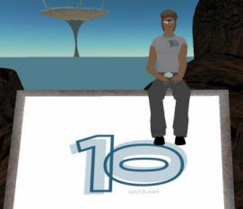
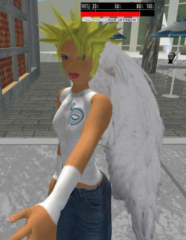
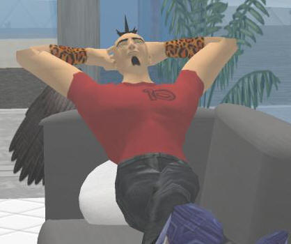

|
|
0.00 2022-05-06 -12:09 -0700 |
| This is a picture of Orcmid's first avatar "on 10." Cute.
Very cute. I snapped this on April 19, 2006, and e-mailed it from Second Life to my "real" cyberlife so I could use it in announcing the 10 island party on Orcmid's Lair. |
 |
|
 |
Here's Laura Foy's avatar, LauraThug Seattle. The Heads-Up Display
(HUD) in my field of view is from my avatar's JetPack and has nothing to
do with LauraThug. I bumped into avatar Codi Ng (Erik) in the tree house and didn't chat long enough to figure out who the avatar's owner was. The startling aspect in Codi's case is that he and I ended up with the same basic avatar body and were both wearing the on10 T-shirt. Except for the shades and different pants, I thought I'd run into my avatar's twin. I didn't see avatar JeffSand Dot (guess whose). We did notice later that avatar Scoble Seattle was online, but we failed to hail him or even find out where the avatar was hanging out. |
| And here's Adam Kinney's avatar, Adam Kivioq, relaxing at the end of the
party (Adam claimed he was on the phone in real life). You may safely conclude that wings of various form are popular in Second Life. |
 |
|
|
You are navigating Orcmid's Lair |
created 2006-04-19-22:38 -0700 (pdt) by orcmid |